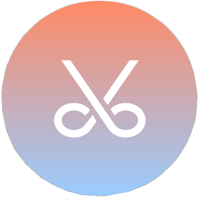

We’ve all been to a barbershop or salon at least once in our life. We travel to their place of business, we walk in, we get our hair cut or styled, we pay, and then we leave. Believe it or not, this is exactly how getting a haircut has worked ever since 296 BC, back when people first got paid to style and cut other people's hair in Ancient Rome. For over 2,300 years, the basic formula for barbers has been the same, but thanks to the ultraportable and super connected world of today, we can create a paradigm shift in barbering, in the form of an app/website that connects us with mobile barbers in our area who come to our homes to cut/style our hair, and are paid through the app (no cash tips necessary). Not only does this allow you to get your hair styled in the comfort of your home, but it also saves the trouble of traveling to the nearest barbershop, you can pay with your credit card, and the individual barber sets their own price which will generally be much cheaper than a traditional barber.
I used Axure RP to create this mockup for the app. I chose Axure because other tools such as Adobe XD and Invision lacked the harmony of utility and simplicity that I was looking for. I was able to easily organize visuals layer by layer, and I was pretty happy with the end result. I tried to keep Google's Material Design guidelines in mind, but found that the app started to look more and more like every other UI out there, so I decided to keep the usual material elements while implementing some unique design elements such as scrollable sub-pages, and fullscreen gradients.
My involvement with Backpack Barber never went beyond develoing a logo and developing static mock-ups, but I still learned so much from the experience. Axure RP is n awesome tool for prototyping, even though it lacks some of the fancier features found in other tools like animations, and interactivity. This at least allowed me to focus primarily on the design more than anything else. Around the time I began working on Backpack Barber, Google's Material design system was incredibly popular. All sort of websites and apps across multiple platforms were utilizing card interfaces, branding through color, and z-axis manipulation and with good reason. I've been in love with material design for a long time, and my study on the design philosophy can be found here, but I have to admit that in it's early form, most apps practicing material design began to look more and more similar. These days we're seeing a revolution in mobile app design in the form of Material 2.0 and it's become even easier to impliment radical and experimental design solutions thanks to Google's Flutter framework. I plan to dive back into Backpack Barber to experiment with new design, and I plan to use Flutter framework to impliment a working application for both Android and iOS.